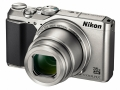

COOLPIX A900专为口袋小、行李多的用户而制造，是一款专门针对在旅途中的用户的小相机。该相机具有35倍光学变焦和70倍动态缩放变焦，确保用户能够捕捉到美丽的镜头，无论是在沙滩上看夕阳西下，还是沉浸在街头狂欢中。对于那些希望捕捉到旅行中微小细节的用户，即使在近约1cm的距离微距拍摄模式下，COOLPIX A900也能进行对焦。约2,029万有效像素、背部入射式CMOS传感器和尼克尔镜头，即使在低光环境下，相机也可以捕捉到这些丰富和精彩的细节。